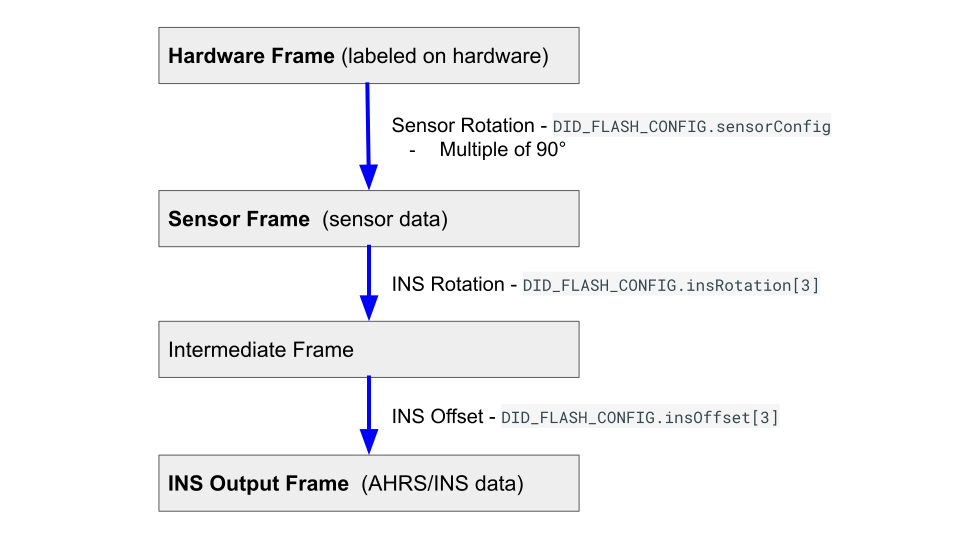
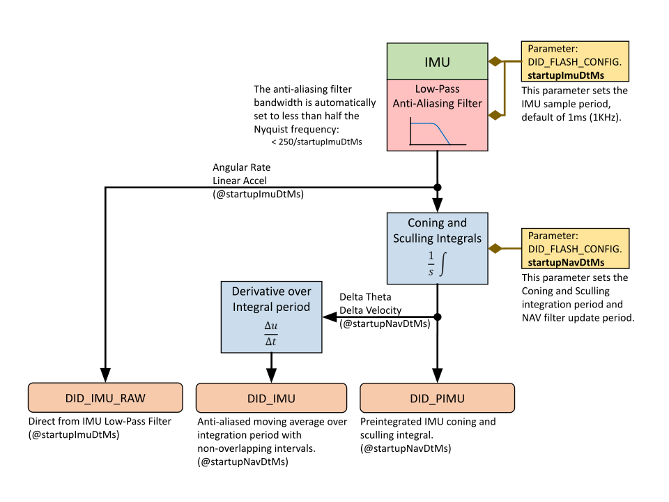
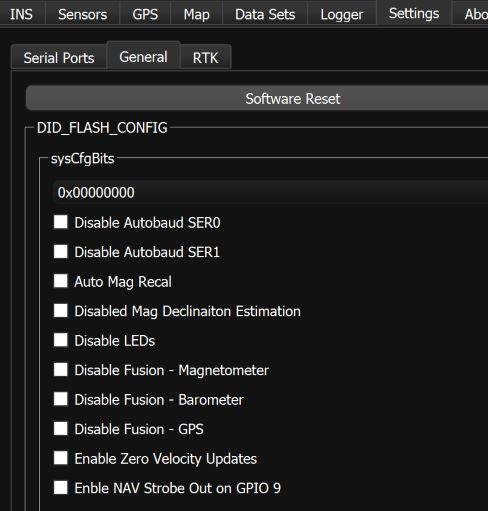

IMU INS GNSS Configuration¶
Translation¶
The IMX can be mounted and operated in any arbitrary orientation. It is often desirable and conventional to translate the IMX output so that it is translated into the vehicle frame located at certain point for control and navigation of the vehicle. This is done using the Sensor Rotation, INS Rotation, and INS Offset parameters.
In most common applications, output is translated to the vehicle frame (X to the front, Y to the right, and Z down):
- Sensor Rotation provides gross rotation of the IMU output in multiples of 90°.
- INS Rotation provides small angle alignment of the INS output.
- INS Offset shifts the location from the INS output.
Coordinate Frame Relationship¶
The relationship between the Hardware Frame, Sensor Frame, and INS Output Frame are as follows.

The Hardware Frame and Sensor Frame are equivalent when the Sensor Rotation in DID_FLASH_CONFIG.sensorConfig is zero. The Hardware Frame origin and Sensor Frame origin are always at the same location and may differ in direction according to the Sensor Rotation in DID_FLASH_CONFIG.sensorConfig. The Sensor Frame and INS output Frame are equivalent when the DID_FLASH_CONFIG.insRotation and DID_FLASH_CONFIG.insOffset are zero.
Sensor Rotation (Hardware Frame to Sensor Frame)¶
The Sensor Rotation is used to rotate the IMU and magnetometer output from the hardware frame to the sensor frame by multiples of 90°. This is done using the SENSOR_CFG_SENSOR_ROTATION_MASK bits of the DID_FLASH_CONFIG.sensorConfig as defined in enum eSensorConfig. The Sensor Rotation is defined in X,Y,Z rotations about the corresponding axes and applied in the order of Z,Y,X. This rotation is recommended for gross rotations.
INS Rotation¶
The INS rotation is used to convert the INS output from the sensor frame to the vehicle frame. This is useful if the sensor frame and vehicle frame are not aligned. The actual INS rotation parameters are DID_FLASH_CONFIG.insRotation[3] (X, Y, Z) in radians. The INS rotation values describes the rotation from the INS sensor frame to the intermediate frame in order of Z, Y, X.
INS Offset¶
The INS offset is used to shift the location of the INS output and is applied following the INS Rotation. This offset can be used to move the IMX location from the origin of the sensor frame to any arbitrary location, often a control navigation point on the vehicle.
Manually Aligning the INS After Mounting¶
NOTE for use:
- The Infield Calibration process can be used instead of this process to automatically measure and align the INS with the vehicle frame for INS rotations less than 15°.
- If using software release 1.8.4 or newer, we recommend using the
DID_FLASH_CONFIG.sensorConfigto rotate the sensor frame by 90° to near level before following the steps below.
The following process uses the IMX to measure and correct for the IMX mounting angle.
-
Set
DID_FLASH_CONFIG.insRotationto zero. -
Set the sensor on the ground at various known orientations and record the INS quaternion output (DID_INS_2). Using the Euler output (DID_INS_1) can be used if the pitch is less than 15°. It is recommended to use the EKF Zero Motion Command to ensure the EKF bias estimation and attitude have stabilized quickly before measuring the INS attitude.
-
Find the difference between the known orientations and the measured INS orientations and average these differences together.
-
Negate this average difference and enter that into the
DID_FLASH_CONFIG.insRotation. This value is in Euler, however it is OK for this step as this rotation should have just been converted from quaternion to Euler and will be converted back to quaternion on-board for the runtime rotation.
Infield Calibration¶
The Infield Calibration provides a method to 1.) zero IMU biases and 2.) zero INS attitude to align the INS output frame with the vehicle frame. These steps can be run together or independently.
GNSS Antenna Offset¶
If the setup includes a significant distance (40cm or more) between the GPS antenna and the IMX central unit, enter a non-zero value for the GPS lever arm, DID_FLASH_CONFIG.gps1AntOffset (or DID_FLASH_CONFIG.gpsAnt2Offset) X,Y,Z offset in meters from Sensor Frame origin to GPS antenna. The Sensor Frame origin and Hardware Frame origin are always at the same location but may differ in direction according to the Sensor Rotation.
IMU Sample and Navigation Periods¶
The IMU sample period is configured by setting DID_FLASH_CONFIG.startupImuDtMs in milliseconds. This parameter determines how frequently the IMU is measured and data integrated into the DID_PIMU data. DID_FLASH_CONFIG.startupImuDtMs also automatically sets the bandwidth of the IMU anti-aliasing filter to less than one half the Nyquist frequency (i.e. < 250 / startupImuDtMs).

The preintegrated IMU (PIMU) a.k.a. Coning and Sculling (delta theta, delta velocity) integrals serve as an anti-aliased moving average of the IMU value. The DID_IMU is the derivative of the DID_PIMU value over a single integration period.
IMU Latency¶
The IMU low-pass filter (LPF) adds latency (delay) to the signal in the IMU output. This latency can be expressed as:
The default IMU sensor bandwidths (cutoff frequencies) and corresponding signal latencies are:
| Sensor | Bandwidth | Signal Latency |
|---|---|---|
| Gyro | 539 Hz | 4.1 ms |
| Accelerometer | 416 Hz | 5.3 ms |
Navigation Update and Output Periods¶
The navigation filter output period should be set using the flash parameter DID_FLASH_CONFIG.startupNavDtMs. This value sets the DID_SYS_PARAMS.navOutputDtMs and DID_SYS_PARAMS.navUpdateDtMs during startup of the IMX.
The navigation filter output period (DID_SYS_PARAMS.navOutputDtMs) determines the EKF output data rate, the maximum rate for messages DID_INS_1, DID_INS_2, and DID_INS_3.
The navigation filter update period (DID_SYS_PARAMS.navUpdateDtMs) controls the EKF update rate and sets the standard integration period for the preintegrated IMU (PIMU) output. This parameter is automatically adjusted based on the value of DID_SYS_PARAMS.navOutputDtMs and the amount of CPU available.
Minimum NAV Output and Update Period (Maximum Data Rate)¶
The following table lists the output and update period minimum limits for the IMX.
| Operation Mode | IMX-5 Minimum Output Period / Update Period |
IMX-6 Minimum Output Period / Update Period |
|---|---|---|
| INS (GPS enabled) | 7 ms (142 Hz) / 14 ms | 2 ms (500 Hz) / 4 ms |
| AHRS (GPS disabled) | 5 ms (200 Hz) / 10 ms | 2 ms (500 Hz) / 4 ms |
| VRS (GPS and magnetometer disabled) |
4 ms (250 Hz) / 8 ms | 2 ms (500 Hz) / 4 ms |
INS-GNSS Dynamic Model¶
The DID_FLASH_CONFIG.dynamicModel setting allows the user to adjust how the EKF behaves in different dynamic environments. All values except for 2 (STATIONARY) and 8 (AIR <4g) are experimental. The user is encouraged to attempt to use different settings to improve performance, however in most applications
the default setting, 8: airborne <4g, will yield best performance.
The STATIONARY configuration (dynamicModel = 2) can be used to configure the EKF for static applications. It is a permanent implementation of the Zero Motion Command which will reduce EKF drift under stationary conditions.
Disable Magnetometer and Barometer Updates¶
Magnetometer and barometer updates (fusion) into the INS and AHRS filter (Kalman filter) can be disabled by setting the following bits in DID_FLASH_CONFIG.sysCfgBits.
| Bit Name | Bit Value | Description |
|---|---|---|
| SYS_CFG_BITS_DISABLE_MAGNETOMETER_FUSION | 0x00001000 | Disable magnetometer fusion into EKF |
| SYS_CFG_BITS_DISABLE_BAROMETER_FUSION | 0x00002000 | Disable barometer fusion into EKF |
These settings can be disabled using the General Settings tab of the EvalTool.

Disable Zero Velocity Updates¶
Zero velocity updates (ZUPT) rely on GPS and/or wheel encoder data. In some cases there can be a slight lag/deviation when starting motion while simultaneously rotating. This is because GPS data is updated at 5 Hz and it takes a few samples to detect motion after a period of no motion. When ZUPT is enabled, it acts as a virtual velocity sensor telling the system that its velocity is zero. It may conflict briefly with GPS velocity observation when starting motion. If a slight lag at the beginning of motion is an issue, ZUPT may be disabled. Generally it should be enabled (Default). It can be disabled using DID_FLASH_CONFIG.sysCfgBits or using the General Settings tab of the EvalTool.
Disable Zero Angular Rate Updates¶
Zero angular rate updates (ZARU) rely on analysis of either IMU (gyro) data or wheel encoders when available. When angular motion is very slow and no wheel encoders are available a zero angular rate may be mistakenly detected, which will lead to gyro bias estimation errors. In these cases it can be beneficial to disable ZARU if the applications has slow rotation rates (approximately below 3 deg/s). It is not encouraged to disable ZARU if there is no rotation or faster rotation. It can be disabled using DID_FLASH_CONFIG.sysCfgBits or using the General Settings tab of the EvalTool.